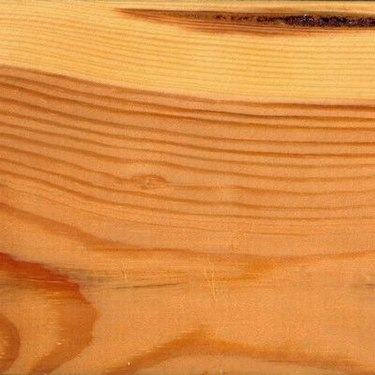

Borovi
Sokoldalú faanyag. A magasépítésben, a föld- és vízépítésben, a bútorgyártásban, hajóépítésben, bányafának, vasúti talpfának, vezetékoszlopnak használják. Gyantatartalmának eltávolítása után papírgyártásra alkalmas. Gyökértuskójából kolofónium, a gyantás fából terpentin, fenyőszurok, fenyőkorom nyerhető.
- Szárítás
- A fát télen kell dönteni, gyorsan kérgelni és máglyázni, mert kékülésre hajlamos. Gyorsan, jól szárítható, de közben vetemedhet, gyűrűs és bélrepedések keletkezhetnek benne. A lucfenyőnél kevésbé vetemedik.
- Megmunkálás
- Minden forgácsoló szerszámmal könnyen megmunkálható, de rosszul faragható. A gyantatáskák a faanyag minőségét rontják. Fűrészpora izgató hatású.
- Rögzítés
- Jól szegelhető, csavarozható. Jól ragasztható.
- Felületkezelés
- Szálirányban szépen csiszolható. Felületkezelés előtt gyantamentesíteni kell. Fény hatására lassan besötétedik, ez megfelelő kezeléssel lassítható. Pácoláskor foltosodhat.
- Tartósság
- Időjárásálló. Élettartama szabadban kb. 60 év, vízben kb. 500 év, állandóan szárazon kb. 1000 év.
| Tulajdonság | Érték |
|---|---|
| Rönkhossz | n.a. |
| Rönkátmérő | 0.9 - 1.0 m |
| Sűrűség | 0.52 g/cm3 |
| Zsugorodás sugárirányban | 4.0% |
| Zsugorodás húrirányban | 7.7% |